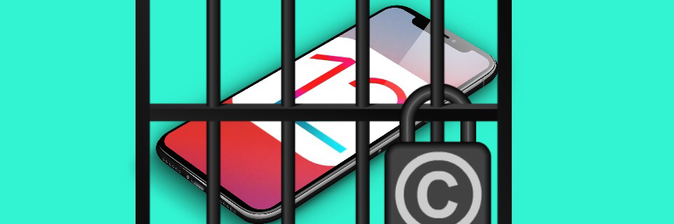

Jailbreaking?!
Jailbreaking means bypassing the restrictions Apple puts on the operating system and taking full control of the device. With a jailbroken device, you can install apps and tweaks that aren't authorized by Apple, but you also remove the tough security protections that Apple has built into iOS.
The process of jailbreaking your iPhone, iPad or iPod touch is legal in the U.S. for the time being. What is certain is that Apple considers jailbreaking a violation of its warranty, so if something goes wrong during the process, it's up to you to fix it.
Snipit From TomsGuide